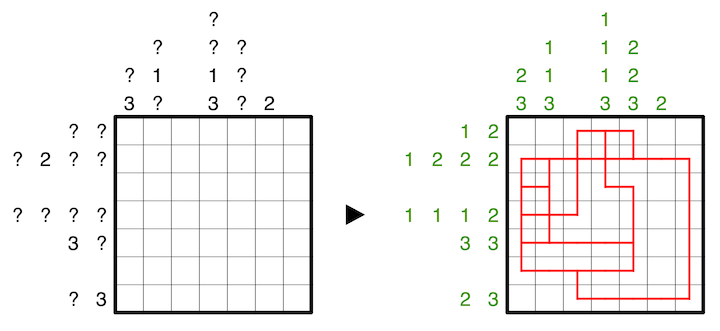

Clues outside the grid indicate how many turns, straight lines, branches, or crosses occur in the row or column, irrespective of the line shape's rotation. If a row or column is clued, all nonzero clues are listed and are provided in ascending order. A question mark can be any positive integer.
A 7x7 example is provided:
